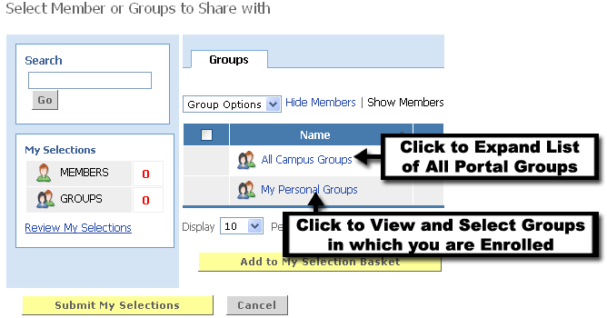
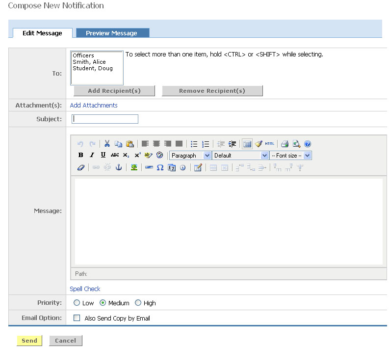

Targeting Notification Messages
Individuals granted authoring privileges can compose and send Notifications directly from the notification channel.
Click Compose Notifications to begin.
Step 1: Adding Recipients
Click the Add Recipients button.
The Selection Basket used for adding recipients contains three sections:
- Search - Search for a specific member to add.
- My Selections - Details the number of members/groups currently in the Selection Basket.
- Members / Groups Listings - All members/groups available to be added to the Selection Basket.
You may add members and groups to your Selection Basket in one of two ways: you may search for specific members or groups, or browse through the directory of Campus Groups, your own Personal Groups, or individual Members.
To search for a specific member or group:
- Enter a whole or partial member or group name of the in the Search field.
- Click the Go button.
- From the list of search results, place a checkmark next to each member/group that you wish to add.
- Click the Add to My Selection Basket button.
Once you click the Add to My Selection Basket button, the number in the My Selections section in the left navigation pane will increase by the number you added. Also, the groups/members that you added will now appear grayed out in the Members/Groups Listings section.
To browse through the listings of Campus Groups or your own Personal Groups:
- Click the Groups link.
- Choose Campus or Personal Groups.
- Find the group you wish to add.
- Place a checkmark next to the group name.
- Click the Add to My Selection Basket button.
Complete Selections:
- When all desired groups and members have been selected, click the Submit My Selections button.

Step 2: Author Message
To begin composing your notification:
- Enter the subject of the notification
- To add attachments to the notification, click the Add Attachments link
- Click the Browse button to find the file.
- Click the Upload Now button.
- Enter the body of the message. A HTML WYSIWYG editor is included which allows you to include additional formatting in the message.
- Click the Spell Check link to spell check the content of the message field
- Assign a priority.
- If the notification should also be distributed via email, check the Also Send Copy by Email option.

Step 3: Preview and Send
To preview the message, prior to sending click the Preview Message tab at the top of the message. From the preview view, you can return to the edit message view to make additional changes or send.
- Click the Send button to distribute the message.